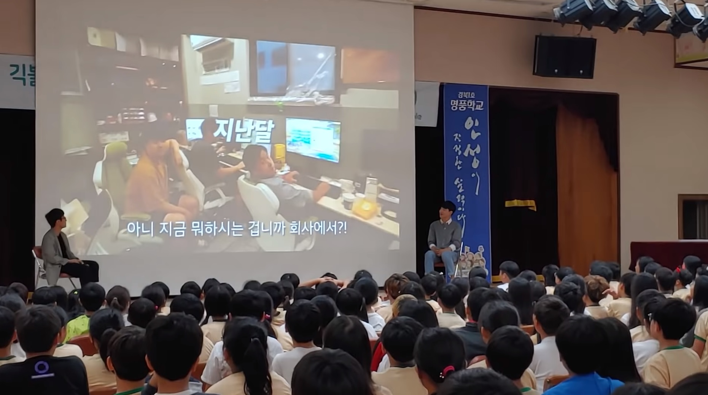
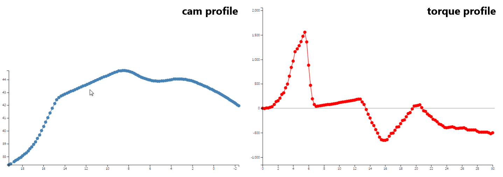

Geekble
Science and technology education with new media contents
2019 - Present

Interactive Torque Designer
Simplifying mechanical design process
2019
Interactive Torque Designer
My role: mechanical analysis, platform development
Advisor: Geonhee Lee, Wangi Park, Junwon Seo, Dr. Yongsoo Kyong
To design hinge with auto-close and free stop function which is mounted in oven door, analyzing torque on hinge is an essential process. Using a computational simulation software for dynamic analysis takes complicated manipulation process. Hence, it cannot provide reverse engineering, which modifies hinge property(cam profile) through setting desirable torque profile. Therefore, I analyzed structural property of hinge to simplify torque analysis and deployed it on the web platform to make an interactive design with graphical modification possible.
I chose web because of universality and scalability. Any user can use this platform only with internet browser and future additional function can be easily adapted. With mechanical analysis result, I made several function in d3.js
which is a library that enables data plot and manipulation. As a result, user can get torque profile directly only with dragging cam profile and vice versa without heavy simulation.
 With prototype version of Interactive Torque Designer, I asked feedback to field engineers who design hinge. After getting several user experience feedbacks, I added multiple drag and other functions to make design process
more easily. With the final version of Interactive Torque Designer, user can intuitively analyze torque and do the inverse engineering, which significantly simplifies mechanical design process of mass produced hinge. Furthermore, it helps engineer to communicate with other division member, since it explains physical phenomenon through intuitive expression without abstract knowledge.
With prototype version of Interactive Torque Designer, I asked feedback to field engineers who design hinge. After getting several user experience feedbacks, I added multiple drag and other functions to make design process
more easily. With the final version of Interactive Torque Designer, user can intuitively analyze torque and do the inverse engineering, which significantly simplifies mechanical design process of mass produced hinge. Furthermore, it helps engineer to communicate with other division member, since it explains physical phenomenon through intuitive expression without abstract knowledge.
Advisor: Geonhee Lee, Wangi Park, Junwon Seo, Dr. Yongsoo Kyong
To design hinge with auto-close and free stop function which is mounted in oven door, analyzing torque on hinge is an essential process. Using a computational simulation software for dynamic analysis takes complicated manipulation process. Hence, it cannot provide reverse engineering, which modifies hinge property(cam profile) through setting desirable torque profile. Therefore, I analyzed structural property of hinge to simplify torque analysis and deployed it on the web platform to make an interactive design with graphical modification possible.

Sovoro
My role: UI/UX research & design, market research, business activity, catalog design
Collaborator: Jihyeon Yoon, Seungman Choi, and Yongtaek Kwon
Sovoro is a social start-up, developing auto transcription software and app using real-time speech-to-text voice recognition engine. Service targets people with hearing loss who want to use software in on/offline lecture and seminar. Since existing solutions, such as stenography or sign language, are expensive and inefficient for daily education, Sovoro overcomes these problems and takes position in transcript market for people with hearing loss.
As a communications manager, I designed user interface and user experience of the service in early version. Since providing real-time transcript is the main function of the service, minimized menu buttons and made script panel
always-on-top of the window. Through setting button, user can modify language, font size, transparency.
 During development and research of user experience as having interview with people who have hearing loss, we found some needs that not only for internal sound of computer usage, but also during daily or business talk. So I
suggested external mic, which is portable, wireless, and
reasonable in operating distance to input user voice.
During development and research of user experience as having interview with people who have hearing loss, we found some needs that not only for internal sound of computer usage, but also during daily or business talk. So I
suggested external mic, which is portable, wireless, and
reasonable in operating distance to input user voice.
With developed software and additional user experience, we made a contract with Korea Employment Agency for the Disabled and got accelerating from a social venture accelerator Sopoong with 30 million Won seed funding.
Collaborator: Jihyeon Yoon, Seungman Choi, and Yongtaek Kwon
Sovoro is a social start-up, developing auto transcription software and app using real-time speech-to-text voice recognition engine. Service targets people with hearing loss who want to use software in on/offline lecture and seminar. Since existing solutions, such as stenography or sign language, are expensive and inefficient for daily education, Sovoro overcomes these problems and takes position in transcript market for people with hearing loss.
With developed software and additional user experience, we made a contract with Korea Employment Agency for the Disabled and got accelerating from a social venture accelerator Sopoong with 30 million Won seed funding.
Book Borrowing Robot
Supporting book borrowing process in the library
2017
Book Borrowing Robot
My role: software development, presentation
Collaborator: Youngsin Kim, Sehwan Rho, Doohee Kim, and Donghyeon Lim
When users want to find a book in the library, they have to search book, find location of the specific bookshelves, and take it to the machine to proceed borrowing process. As a bachelor thesis project, my team proposed Book Borrowing Robot, which makes book borrowing process automative and much easier.
Robot consisted of gripper, camera, 3 number of microcontroller units, and motors. With information of bookshelf coordination, robot performs automatic driving to near the bookshelf. After performing precise driving with camera
vision
control until specific distance. Finally drag
book with gripper and rewind previous driving process to bring it back to the user.

 As developing software, I implemented mapping algorithm which enables automatic driving to the book and original position, and vision control system which enables precision driving until camera captures QR code. And ,on the final
thesis proposal day, I prepared and presented the result as the representative of my team.
As developing software, I implemented mapping algorithm which enables automatic driving to the book and original position, and vision control system which enables precision driving until camera captures QR code. And ,on the final
thesis proposal day, I prepared and presented the result as the representative of my team.
Collaborator: Youngsin Kim, Sehwan Rho, Doohee Kim, and Donghyeon Lim
When users want to find a book in the library, they have to search book, find location of the specific bookshelves, and take it to the machine to proceed borrowing process. As a bachelor thesis project, my team proposed Book Borrowing Robot, which makes book borrowing process automative and much easier.
Ankle Rehabilitation Assistant
Concept prototype of research oriented equipment
2017